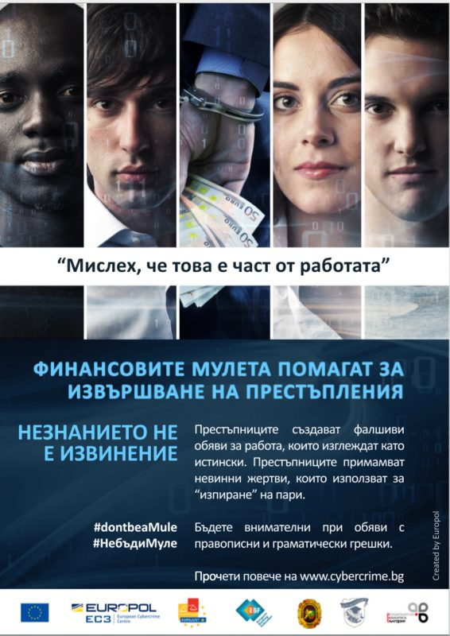

Ръководство, история, нормативна рамка и обществена информация за Главна дирекция „Борба с организираната престъпност“ при МВР.
Мартин Златков започва кариерата си в правоохранителните структури през 2001 г. като служител на сектор „Икономическа полиция“ при СДВР. Постъпва на работа в Главна дирекция „Борба с организираната престъпност“ през 2007 г. като инспектор в сектор „Фалшификации“. През 2012 г. става началник на същия сектор. От 2013 до 2015 г. е началник на сектор в ДАНС.
След възстановяването на Главната дирекция оглавява регионалната структура на ГДБОП в гр. Велико Търново. След 2017 г. е началник на отдел „Трансгранична организирана престъпност“. Професионалният му път в централната структура на главната дирекция продължава на изпълнителски и ръководни длъжности.
Като служител с над 25 години опит в сферата на борбата с трансграничната организирана престъпност, ръководи и участва в редица значими национални и международни специализирани операции. Директор на ГДБОП от 5 март 2026 г.
Мартин Златков притежава магистърска степен по икономика от Великотърновски университет „Св. Св. Кирил и Методий“. Преминал е през редица квалификационни курсове у нас и в чужбина, сред които на ФБР, Сикрет сървиз, Европол и др. Удостоен е с редица награди и отличия от ръководството на МВР и партньорски организации. Владее английски, немски и руски език.
ВПД — временно преназначен на длъжността
Главна дирекция „Борба с организираната престъпност“ е създадена на 13 февруари 1991 г. като Централна служба за борба с организираната престъпност в МВР (ЦСБОП). Към онзи момент служби с подобни функции и компетентности съществуват в САЩ и Великобритания.
Създадена е Централна служба за борба с организираната престъпност в МВР (ЦСБОП) — 13 февруари 1991 г.
Преструктурирана е в Национална служба към МВР (НСБОП).
Преобразувана в Дирекция „Противодействие на организираната и тежката престъпност“ към Главна дирекция „Криминална полиция“.
Възстановена като Главна дирекция към МВР (ГДБОП).
Службата преминава с всичките си активи и пасиви в структурата на Държавна агенция „Национална сигурност“ (ДАНС).
След изменения в Закона за МВР дирекцията започва да функционира отново като ГДБОП — февруари 2015 г.
Независимо от структурните промени, през годините в ГДБОП е изграден съществен професионален и административен капацитет, рефлектирал в ефективното изпълнение на задачи, свързани с противодействие на организираната престъпност в сферата на икономиката, финансово-кредитната система, терористичните действия, незаконните сделки с оръжия и боеприпаси, контрабандата, производството, трафика и разпространението на наркотични и психотропни вещества, трафика на хора, изготвянето и разпространението на неистински парични знаци и ценни книжа, корупцията и киберпрестъпността.
Резултатите от дейността на ГДБОП-МВР, формирали доверие и позитивни оценки сред българските граждани и чуждестранни партньори, доведоха до задълбочаване на оперативното сътрудничество, обмена на информация и превръщането ѝ в надеждна част от европейската полицейска общност.
Адекватното законодателство, високото ниво на управление, професионализмът на служителите на ГДБОП-МВР са залог за ефективно противодействие на организираната престъпност и резултатно изпълнение на поставяните задачи в интерес на обществото.
Основни нормативни документи, регламентиращи дейността на Главна дирекция „Борба с организираната престъпност“ при Министерството на вътрешните работи са:
Както и международното и европейско законодателство в областта на вътрешната сигурност и обществения ред.
ГДБОП е съкращение на Главна дирекция „Борба с организираната престъпност“. Това е специализирана структура при Министерството на вътрешните работи на Република България, която разследва организирани престъпни групи (ОПГ). Подобни разследвания са сложни, продължителни, трудоемки и скъпи! Организираните престъпни групи се отличават със сложната си йерархична структура, трайност на сговора за извършване на престъпления, взаимосвързаност на членовете, често транснационалност на дейността, милиони нанесени щети и т.н.
НСБОП (Национална служба „Борба с организираната престъпност“) е съкращение на същата служба до 2008 г.
ДАНС — Държавна агенция „Национална сигурност“ е специализирана правоохранителна организация на пряко подчинение на правителството и парламента на Република България. ДАНС притежава широк, сложен и надежден потенциал за противодействие на деструктивни влияния върху националната сигурност на страната ни.
СОБТ е съкращение на Специализиран отряд за борба с тероризма при Министерството на вътрешните работи на България. Звеното извършва специфични задачи по противодействие на терористична дейност, отвличания и други мащабни посегателства срещу граждани и собственост.
ОПГ (организирана престъпна група) е структурирано трайно сдружение на три или повече лица с цел да извършват съгласувано престъпления — в страната или в чужбина — за които е предвидено наказание лишаване от свобода повече от три години.
Характеризира се с:
Действащото в Република България законодателство повелява всеки пострадал от престъпление гражданин да търси съдействие от органите на МВР в районното управление, на чиято територия е извършено престъплението, или на територията на районното по местоживеене. Ако пострадате от престъпление — незабавно се явете в най-близкото районно управление на МВР. Ако не знаете кое районно управление на МВР е най-близко до Вас — попитайте първия срещнат униформен полицай, съсед, роднина, познат или приятел. Във всяко районно управление на МВР в Република България е денонощно на разположение дежурен полицай/офицер или друг служител на полицията. Обяснете му точно, ясно и хронологично всички обстоятелства, които са Ви известни по извършеното престъпление или нарушение — независимо дали сте пострадал, свидетел, очевидец или друго.
При спешни случаи звънете на телефон 112 — набира се от всеки стационарен или мобилен телефон безплатно... без код за град или държава! Съобщете за престъплението, нарушението или бедствието бавно, спокойно, точно и ясно. Следвайте инструкциите на оператора.
Ако сте пострадал или свидетел във връзка с дейността на ОПГ в страната или чужбина — служители на ГДБОП-МВР ще се свържат с Вас за допълнителни разяснения и действия по случая!
Сигналите до ГДБОП-МВР имат информативен характер — те могат да послужат като отправна точка за бъдещи проверки и/или разследвания от страна на органите на МВР! Ако сигнализирате — бъдете готови да ни предоставите допълнителни сведения и дори да свидетелствате!
При спешни случаи е необходимо да се свържете с полицията на телефон 112 или в най-близкото районно управление.
Анонимните сигнали подлежат на продължителна и детайлна проверка, за да може информацията в тях да послужи правилно!
При изпращане на съобщение помнете, че ГДБОП е специализирана структура на МВР за борба с организирани престъпни групи. Съобщения, съдържащи словосъчетания като „имам важна информация за голям бандит... извънземни контролират мозъци... аз съм много умен, силен и искам да работя за Вас... Иван от Варна продава наркотици“ не могат да бъдат обект на задълбочени проверки.
Главна дирекция „Борба с организираната престъпност“ е специализирана структура при Министерството на вътрешните работи на Република България. Всички служители в ГДБОП са започнали работа в МВР както всички останали полицаи! Желаеш да работиш в МВР — кандидатстваш за работа в МВР в районното управление на полицията по твоето местоживеене! Информация за обявени конкурси за постъпване в МВР е налична на интернет сайта на Дирекция „Човешки ресурси“ при МВР на адрес mvr.bg/dhr.
Служителите на ГДБОП изпълняват своите задължения, като защитават своя живот и сигурност, както и живота, сигурността и имуществото на всички граждани! Преодоляването на врати, прегради и други заплахи е с цел навременно и качествено запазване и събиране на годни доказателства за осъществявана престъпна дейност. Това е приоритет и задължение на ГДБОП!

„Мислех, че това е част от работата“ — финансовите мулета помагат за извършване на престъпления. Незнанието не е извинение. Научете как се набират финансови мулета и как да се предпазите.
Към страницата